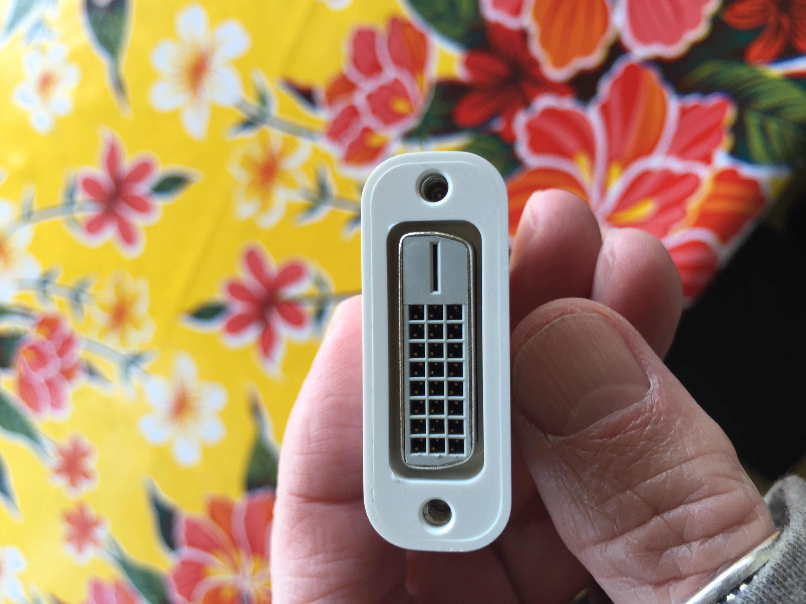

Charlie Craig on Saturday, April 30, 2016
10:52:48
http://pocket.co/son6qg Monotasking Gets a Makeover
14:12:24
What's this again? VGA? It's what my monitor is at the beach. Might be time to get a new one
14:19:48
Dvi
14:20:02
Oh yeah
14:20:07
You can get a little adapter for dvi to HDMI
14:20:37
Yeah I guess I'll do that. My new hole is usb-c
14:20:41
Of all things
14:21:44
USB c -> HDMI ->
DVI -> monitor
14:24:21
I bought a dongle that has hdmi and usb on it. I can plug a dvi -> hdmi into that I hope
14:25:04
If you're trying to plug that thing into an external mentor you might not have the best time though
14:25:23
Why? Power?
14:26:39
Yeah takes a lot of power to drive another display
14:26:43
Might be slow
14:27:08
Great. Well I won't be doing it that often.
14:27:15
Hopefully
14:28:03
Yeah. I like the dedicated desktop and separate laptop situation
14:28:11
But it becomes harder with more houses
14:28:18
Such is life
14:28:27
Me too. We'll see!
14:28:40
Mom's got the right idea with those imacs
14:28:49
I'm exchanging the one I just bought for the more powerful one
14:29:02
Also maybe this one will have a better battery
14:32:56
I'd think the battery would be the best part
14:33:05
It's like 90% battery
14:33:47
Yes supposed to be ten hours. This one I have now has five tops
14:34:09
Others have complained. As usual, for most people it's fine
14:34:56
We'll see with the next one. But I'm barely using it - browsing, basically. It's not like I'm using photoshop and handbrake
14:39:33
Good - that combo might set it on fire!
14:39:49
Anyway looking forward to playing with it this coming weekend
14:41:08
Yep. Hopefully the new one will arrive because I have to return the one I have by Friday. You can see it then and I'll take it Friday after work
14:47:48
I guess no one in the family has any use for my MacBook power bricks
14:49:52
Don't think so
19:43:40
Speakers on this little computer are surprisingly good
20:20:05